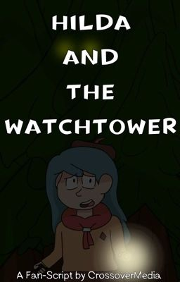

Inspired by the game "Do you copy?", my second Hilda horror Fan-Fiction has Hilda seek the aid of a forest ranger as she seeks safety from a dangerous monster in the woods.
© 2026, Adrian Acosta-Cotto